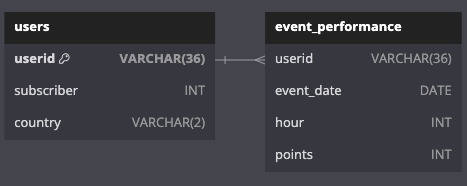

Bot Battles Player Analysis - Part 2: Exploratory Data Analysis
Goal: To summarize one year's worth of mobile gaming data and understand user activity through point scores.
Python, PostgreSQLVisualization and Analysis
Background
An introduction to the game and the data can be found here. The full project containing the code and both the original and cleaned versions of the data can be found on my GitHub.
Database ERD
Note
There were 10 players with a combined 417 entries in the event_performance table who have userids that don't match any of the userids in the users table. These players will be excluded from any analysis that focuses on information from the users table, such as subscriber or country, and will be kept in when the analysis pertains to information from the event_performance table only. Ignoring such a small number of entries (417 out of 37,568) won't have too big of an impact on the overall analysis, but the data team should look into why this is happening so the issue doesn't persist or get progessively worse (SQL query).
Section 1: Overall Participation and User Profiles
SQL QueriesSQLAlchemy, Pandas, Matplotlib, and Statsmodels
Overall Participation
Over the last year, there were 980 participating userids in the events_performance table and 1,100 registered userids in the users table. Only 970 of the participating userids match ones in the users table, meaning that 970 of 1,100 registered players (88.18%) participated in at least one gaming event.
Of those who participated, 795 were non-subscribers (81.12%) and 175 were subscribers (17.86%). The number of participating users is slightly lower than the amount we would expect, as 18.27% of registered users are subscribers.
User Profiles
-
Subscription Status
-
Non-subscribers are most common by a significant majority (81.7%). The distribution
by country is:
- United Status (39.3%)
- Canada (38%)
- Mexico (22.7%)
-
Subscribers are rare (18.3%). The distribution by country is:
- United States (45.8%)
- Canada (34.3%)
- Mexico (19.9%)
-
Non-subscribers are most common by a significant majority (81.7%). The distribution
by country is:
-
Country
- Players from the US are most common (40.4%), but CA (Canada) isn't that far behind (37.4%)
- Players from MX (Mexico) are the the least common (22%)
Section 2: Exploring Activity Over Time
SQL QueriesSQLAlchemy, Pandas, Matplotlib
In total, there were 147 gaming events, occuring on 40.27% of days in the year. For this part of the analysis I'll use points scored as a proxy for understanding player activity under the following assumption: the more points scored during a gaming event indicates more in-game activity.
Monthly Player Activity (Point Totals) and Participating Users

July to August had the largest increase in player activity (+11.5k pts) and the 3rd largest increase in user participation (+65). August to September had the second largest increase in user participation (+76) but experienced a huge drop (-10.03k pts) in activity.
The largest increase in user participation occurs between January and February (+160), corresponding to the second-largest increase in activity all year (+5.06k pts). This large influx of users early on in the year slows down for the next several months until picking back up in August and September.
Outside of these best-performing late spring and summer months, player activity doesn't show much variation and tends to hover slightly below average. Activity and the number of participating users between February and July remains fairly consistent. However, October, November, and December have the largest number of participating users yet each of those months has lower than average player activity.
Hourly Player Activity (Point Totals) By Season
The graph shows hourly point totals earned for each season. Gaming events only occur in the evening hours, starting as early as 16:00 (4 p.m.) and going as late as 20:00 (8 p.m.). In spring and summer, more players are active in earlier hours (16:00 - 18:00), while in fall and winter, more are active in later hours (18:00 - 20:00).
Spring and summer have no activity during 19:00 - 20:00, yet in fall and winter, most activity happens 19:00. Regardless of the season, activity increases hour by hour until reaching a peak, and then steadily declines afterward.
Section 3: Recommendations
User Engagement Team
- Gaming events occur on only 40.27% of the days in the year and user participation is fairly high, with 88.18% of users participating in at least one gaming event. There is potential to hold additional gaming events throughout the year that are likely to bring in additional revenue.
- Identify why the massive spike in player activity occurred from July to August and adapt any findings to increase engagement in March through June or October through December, times that are historically slow.
- Investigate why August to September saw a huge drop in player activity despite having 76 more participating users than the previous month.
- Find ways to stimulate user engagement outside of July through September. Months like October, November, and December have the highest number of participating users but some of the lowest in-game activity. It's possible many of these players are only logging on for short periods of time or logging on and going inactive, both indicating a lack of interest in the game and signals potential customer churn.
Marketing Team
- Identify what promotions ran during January and February or July through September, months where the number of users increased rapidly. Use any findings to time new campaigns at other times of the year.
- Charge more for ads between 4 p.m. - 6 p.m. in spring and summer and between 6 p.m. - 8 p.m. in fall and winter. These are the hours that see the most in-game activity.